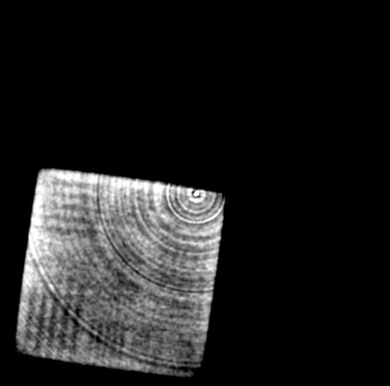
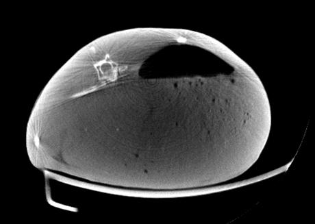

环状伪影 (Ring artifact)
1. 伪影的表现形式
环状伪影表现为从视野 FOV 正中心向外的一系列同心圆。如下图1. 左所示，为 QRM 空间分辨率评估模体，存在环状伪影。图1. 右 为同一环境下兔子重建图像，也存在环状伪影。
 
2. 伪影的产生原因
环状伪影产生的原因主要是探测器像素响应不一致。这种情况多发生在多个半导体模块拼接而成的探测器板 (如下图2. 所示为能量积分型探测器 EID 暗场投影图)，各模板响应的差异在CT 图像上表现为特殊的低频环状伪影。

注意
环状伪影通常发生在真实重建图像中。模拟数据一般不会有环状伪影，否则可能是像素位置没有对齐。
3. 矫正方案
方案1. 亮场平滑1
简化一下文中步骤，直接对空气投影 \(I_0\) 做平滑，即可减轻重建后图像域的环状伪影。同时，进一步减去暗场，也有一定的矫正意义：
矫正后的 QRM 空间分辨率评估模体如下图3. 右所示，这种简单的处理方案可能引起图像质量退化，但并没有显著降低空间分辨率：
注意
使用不同的平滑方式，以及不同形状的 kernel，都会影响重建结果。如果 kernel 过大，图像质量将退化严重。
方案2. 多材料预矫正2
使用有机玻璃板和铝板预矫正，该方法同时能矫正水束和骨硬化伪影
4. 代码实现
方案1. 亮场平滑
注意，平滑的亮场为能量积分或光子计数，根据其数量级可能要自己实现相应滤波函数。
| 环状伪影矫正关键代码 | |
|---|---|
1 2 3 4 5 6 7 8 9 10 11 | |
完整实现 在这里
[注]：以上图片来自 ICRP 110 数字体模投影，模拟投影以及小动物 CT，仅供学习参考
-
Altunbas C , Chao‐Jen Lai, Zhong Y , et al. Reduction of ring artifacts in CBCT: Detection and correction of pixel gain variations in flat panel detectors[J]. Medical Physics, 2014, 41(9). ↩
-
Feng M , Ji X , Zhang R , et al. An experimental method to correct low-frequency concentric artifacts in photon counting CT[J]. Physics in Medicine & Biology, 2021, 66(17):175011 (21pp). ↩